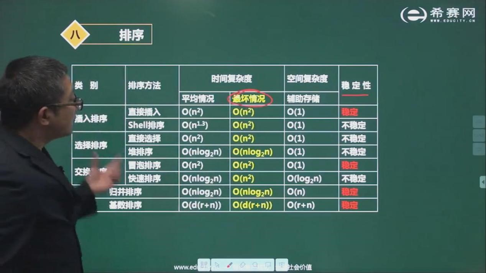

一旦建立了一个重要的数据库后，就可能根据某些需求对数据进行不同方式的排序。比如对姓名按字母顺序排序，对学生按年级排序，对顾客按照邮政编码排序，对国内销售品按价格排序等等。
由于排序非常重要而且可能非常耗时，所以它已经成为计算机可选中广泛研究的课题，而且人们的确已经研究出一些非常成熟的方法。本章里可以看到一些比较简单的算法:冒泡排序、选择排序和插入排序。
计算机程序通常不能像人的大脑一样一下就看到全景，一下就能几个队员进行高低排序，它只能一步一步地解决具体问题和遵循一些简单的规则。但这种方式的好处是，对海量的数据进行处理时候要远远效率高过人类。可能对5个人进行排序时候，人类的速度要块，可是如果对于5000万数据，人脑就无法应付过来了。
下面介绍的三种算法都包括如下两个步骤，这两步循环执行，直到全部数据有序为止:
- 比较两个数据项
- 交换两个数据项，或复制其中一项
但是，每种算法具体实现的细节有所不同。
冒泡排序
冒泡排序算法运行起来非常慢，但在概念上它是排序算法中最简单的，因此冒泡排序算法在刚开始研究排序技术时是一个非常好的算法。
1 | public class BubbleSort { |
程序分析
冒泡排序从结果来看，一种是从小到大，一种是从大到小，两种原理是一样的，这里说的是从小到大。程序第5行定义了一个数组，这个数组就是我们要排序的对象。接着就是冒泡排序法。冒泡排序的原理是：首先进行相邻两个元素大小比较，如果左边的比右边的大，则进行左右交换，把大的放在右边，把小的放左边，然后再用上次比较的结果的靠右的更大的数，再次与右边的数进行比较，按此循环。在本例中第7行程序，调用了arr的length方法，也就是取得数组的长度，由于数组索引从0开始，因此，最后一个元素的索引是arr.length-1，本例中也就是10。当i=10时，进行内部循环，j=0,从第一个和第二个元素开始比较，也就是2和4比较，显然2小于4，所以不用交换，然后对j进行自加1，也就是j=1，再进行条件判断j=1<i=10，所以继续循环，此时a[1]=4,a[2]=1,显然，a[1]>a[2]，所以，进行交换，这样交换后变成2,1,4,3,5,8,2,7,6,9,重复上面的步骤，这样第一趟下来交换后的结果是2,1,3,4,5,2,7,6,8,9。我们注意到i这个变量，这个变量很多书上说它是趟的循环，比如第一趟循环，第二趟循环，其实质是将最大的数移到当前i所能达到的最大索引的位置，也就是说每一趟都是将当前索引范围内的数移到最大位置，如此循环，第10个位置，是1——10索引元素范围内的最大数，第9个位置是1——9索引元素范围内的最大数，类推，第2个位置是1——2最大数，第一个位置也就是本身。这样就能排序完毕。我们注意到理想情况下，这个排序需要10趟。所以这个排序效率是比较低的。
冒泡排序的效率
通过对上面冒泡排序的分析可以看到，第1趟，总共10个数，需要9次比较，第二趟9个数，进行8次比较，依次类推，第10趟1个数，1次比较(这一次比较其实是没有用的)，总共就是9+8+7+6+5+4+3+2+1=45
一般来说，数组中有N个数据项，则第一趟排序有N-1次比较，第二趟有N-2次，如此类推，这样求和公式是:(N-1)+(N-2)+…+1=N(N-1)/2
当N很大时候，忽略掉低次项，也就是进行了约0.5N^2次比较。
上面是一种理论情况，实际进行交换的次数是少于比较的次数，如果数据是随机的，那么大概有一半数据需要交换，则交换次数为0.25(N^2)(最坏的情况是，初始数据完全是逆序的，每次比较都需要进行交换)
交换和比较操作次数都和N^2成正比。由于常数不算在大O表示法中，可以忽略掉系数，并且认为冒泡排序运行需要O(N^2)时间级别。这种排序是很慢的。
事实上，我们也可以这样计算，只要看到一个循环嵌套在另一个循环里，例如在冒泡排序和本章中的其他排序算法中，就可以怀疑这个算法的运行时间为O(N^2)级。外层循环执行N次，内部循环对于每一次外层循环都执行N次(或者几分之N次)，这就意味着将大约需要执行N*N或者N^2次某个基本操作。
选择排序
在上面的冒泡排序中，我们提到了比较次数和交换次数，比较是进行两个元素的比较，但不一定交换。
选择排序改进了冒泡排序，将必要的交换次数从O(N2)减少到O(N)。不幸的是比较次数仍然保持为O(N^2)。然而，选择排序依然为大记录量的排序提出了一个非常重要的改进，因为这些大量的记录需要在内存移动，这就使交换的时间和比较的时间相比起来，交换的时间更为重要。(一般来说，在Java语言中不是这种情况，Java中只是改变了引用位置，而实际对象的位置并没有改变。)
选择排序首先将最小的打上标签，然后将最小的移到最左边，作为已经排好的，然后接着从第二个元素开始，与剩余元素比较，然后找出最小的，再将最小的和第二个元素交换，按此迭代，直到排序结束。
1 | public void selectSort(int[] arr){ |
插入排序
在大多数情况下，插入排序算法是本章描述的基本的排序算法中最好的一种。虽然插入排序算法仍然需要O(N^2)的时间，但是在一边情况下，它要比冒泡排序快一倍，比选择排序还要快一点。它经常被用在较复杂的排序算法的最后阶段，例如快速排序。
1 | for(int i=1;i<a.length;i++){ |
注意：分析这个程序时候需要明确一点temp的值是在一次循环时候不变的，while循环后，j会进行自减。
我们以3 1 4 2 来进行分析，并且分析i = 1时情况 3 1 4 2
temp=a[1]=1，i = j = 1
首先j >= 1，a[j-1]=a[0]=3 > temp = 1，所以将a[0]的值赋给a[1]，这样，变成 3 3 4 2，
然后j自减变成0，由于j = 0 < 1循环中止，此时j = 0，所以执行a[0] = temp=1，也就是1 3,4 2
i = 2，满足条件，不用执行循环
i = 3, temp = a[3] = 2, i = j = 3
首先j >= 1,a[j-1]=a[2]=4>temp=2,所以将a[2]的赋给a[3]，这样变成1 3 4 4
接着将j自减1，变成2，首先j = 2>=1,a[2-1]=a[1]=3，注意temp是不变的，所以a[1]依然大于temp=2，于是将a[1]赋给a[2]，变成1 3 3 4
然后j自减1，变成1，首先j = 1 >= 1,a[1-1]=a[0]=1 < 3，循环停止，于是
a[1]=temp=2
1 2 3 4
j再自减一次，已经不符合条件，整个循环中止，排序完成
几种简单排序之间的比较
除非手边没有算法书可以参考，一般情况下，几乎不太使用冒泡排序算法，它过于简单了。当数据量很小的时候可以有应用价值。
选择排序虽然可以把交换次数降到最低，但比较次数仍然很大，当数据量比较小时候，并且交换数据相对于比较数据更加耗时情况下，可以应用选择排序。
在大多数情况下，数据量比较小或基本有序时，插入排序算法是三种简单排序算法中最好的选择，对于更大数据量，快速排序是最快的。
本章介绍的所有算法时间复杂度都是O(n^2)
